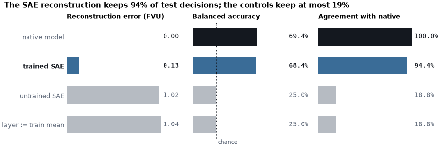
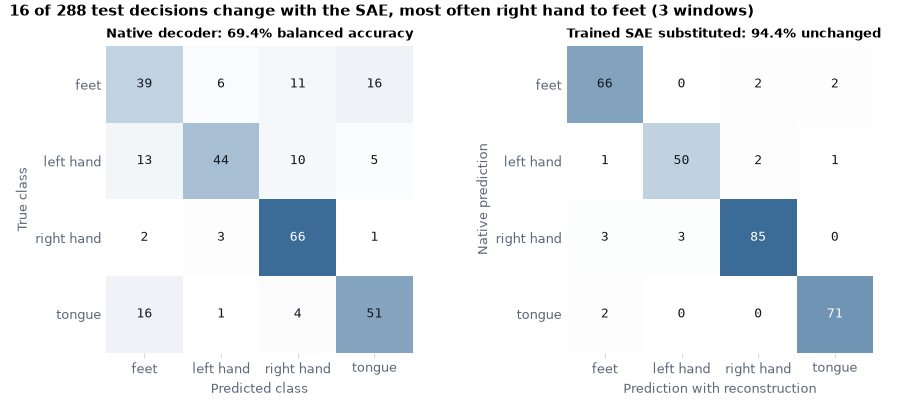
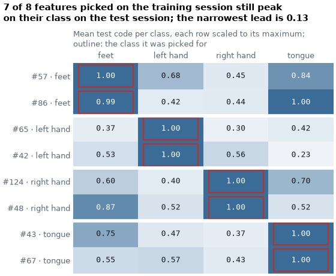
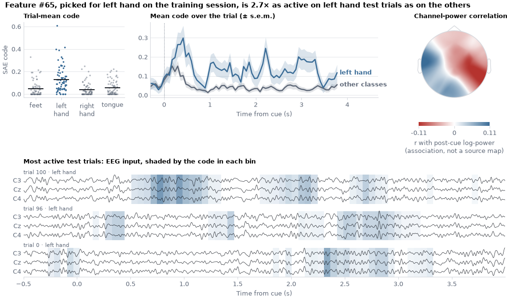
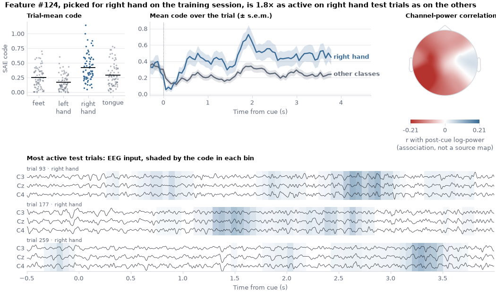

Note
Go to the end to download the full example code.
Sparse autoencoders on the activations of a motor-imagery decoder#
This tutorial trains a ShallowFBCSPNet [1] on one
subject of the BCI Competition IV 2a motor-imagery dataset (BNCI2014_001 via
MOABB), captures the activations of one of its layers, and fits a sparse
autoencoder (SAE) to those activations with
SAE Lens. Braindecode supplies
the data pipeline, the decoder and the activation capture/substitution hooks;
SAE Lens supplies the dictionary, the Top-K activation, its losses and the
training loop; scikit-learn supplies the metrics.
The recipe below is model-agnostic. We fit everything (decoder, scaling statistics, dictionary, feature selection) on the training session and evaluate once on the test session recorded on a different day. All numbers come from a single subject and a short CPU training budget, so they describe this run only and support no scientific claim about motor imagery.
This example needs the optional SAE Lens dependency, installed with
pip install 'braindecode[sae]' (or pip install sae-lens==6.51.3 in a
source checkout). SAE Lens brings a substantial language-model dependency
stack, but no language model or pretrained SAE is downloaded here;
dictionaries trained on LLMs are not EEG dictionaries.
# Authors: Vandit Shah <shahvanditt@gmail.com>
# Bruno Aristimunha <b.aristimunha@gmail.com>
# License: BSD (3-clause)
import copy
import einops
import matplotlib.pyplot as plt
import mne
import numpy as np
import torch
from matplotlib.colors import LinearSegmentedColormap
from matplotlib.patches import Rectangle
from numpy import multiply
from sae_lens.config import LoggingConfig, SAETrainerConfig
from sae_lens.saes.topk_sae import TopKTrainingSAE, TopKTrainingSAEConfig
from sae_lens.training.sae_trainer import SAETrainer
from sklearn.feature_selection import r_regression
from sklearn.metrics import (
ConfusionMatrixDisplay,
accuracy_score,
balanced_accuracy_score,
r2_score,
)
from skorch.helper import SliceDataset
from skorch.utils import to_tensor
from braindecode import EEGClassifier
from braindecode.datasets import MOABBDataset
from braindecode.models import ShallowFBCSPNet
from braindecode.preprocessing import (
Preprocessor,
create_windows_from_events,
exponential_moving_standardize,
preprocess,
)
from braindecode.util import set_random_seeds
from braindecode.visualization import (
capture_activations,
run_with_activation_substitution,
)
The figures use the colors of the Braindecode documentation: the result (the trained SAE, or the class a feature was picked for) in blue, the native decoder in ink and every control in muted slate.
Loading and preparing the data#
Loading#
We use subject 3 of BCI Competition IV 2a (BNCI2014_001), the same recording as Interpretability of EEG Decoders. It contains 22 EEG channels at 250 Hz and four motor-imagery classes (feet, left hand, right hand, tongue), with two sessions of 288 trials recorded on different days.
subject_id = 3
dataset = MOABBDataset(dataset_name="BNCI2014_001", subject_ids=[subject_id])
/opt/hostedtoolcache/Python/3.12.14/x64/lib/python3.12/site-packages/moabb/datasets/bnci/base.py:456: FutureWarning: Montage name 'standard_1005' is deprecated and will be removed in MNE 1.14. Use 'colin27_1005' instead.
montage = make_standard_montage("standard_1005")
/opt/hostedtoolcache/Python/3.12.14/x64/lib/python3.12/site-packages/moabb/datasets/bnci/base.py:456: FutureWarning: Montage name 'standard_1005' is deprecated and will be removed in MNE 1.14. Use 'colin27_1005' instead.
montage = make_standard_montage("standard_1005")
/opt/hostedtoolcache/Python/3.12.14/x64/lib/python3.12/site-packages/moabb/datasets/bnci/base.py:456: FutureWarning: Montage name 'standard_1005' is deprecated and will be removed in MNE 1.14. Use 'colin27_1005' instead.
montage = make_standard_montage("standard_1005")
/opt/hostedtoolcache/Python/3.12.14/x64/lib/python3.12/site-packages/moabb/datasets/bnci/base.py:456: FutureWarning: Montage name 'standard_1005' is deprecated and will be removed in MNE 1.14. Use 'colin27_1005' instead.
montage = make_standard_montage("standard_1005")
/opt/hostedtoolcache/Python/3.12.14/x64/lib/python3.12/site-packages/moabb/datasets/bnci/base.py:456: FutureWarning: Montage name 'standard_1005' is deprecated and will be removed in MNE 1.14. Use 'colin27_1005' instead.
montage = make_standard_montage("standard_1005")
/opt/hostedtoolcache/Python/3.12.14/x64/lib/python3.12/site-packages/moabb/datasets/bnci/base.py:456: FutureWarning: Montage name 'standard_1005' is deprecated and will be removed in MNE 1.14. Use 'colin27_1005' instead.
montage = make_standard_montage("standard_1005")
/opt/hostedtoolcache/Python/3.12.14/x64/lib/python3.12/site-packages/moabb/datasets/bnci/base.py:456: FutureWarning: Montage name 'standard_1005' is deprecated and will be removed in MNE 1.14. Use 'colin27_1005' instead.
montage = make_standard_montage("standard_1005")
/opt/hostedtoolcache/Python/3.12.14/x64/lib/python3.12/site-packages/moabb/datasets/bnci/base.py:456: FutureWarning: Montage name 'standard_1005' is deprecated and will be removed in MNE 1.14. Use 'colin27_1005' instead.
montage = make_standard_montage("standard_1005")
/opt/hostedtoolcache/Python/3.12.14/x64/lib/python3.12/site-packages/moabb/datasets/bnci/base.py:456: FutureWarning: Montage name 'standard_1005' is deprecated and will be removed in MNE 1.14. Use 'colin27_1005' instead.
montage = make_standard_montage("standard_1005")
/opt/hostedtoolcache/Python/3.12.14/x64/lib/python3.12/site-packages/moabb/datasets/bnci/base.py:456: FutureWarning: Montage name 'standard_1005' is deprecated and will be removed in MNE 1.14. Use 'colin27_1005' instead.
montage = make_standard_montage("standard_1005")
/opt/hostedtoolcache/Python/3.12.14/x64/lib/python3.12/site-packages/moabb/datasets/bnci/base.py:456: FutureWarning: Montage name 'standard_1005' is deprecated and will be removed in MNE 1.14. Use 'colin27_1005' instead.
montage = make_standard_montage("standard_1005")
/opt/hostedtoolcache/Python/3.12.14/x64/lib/python3.12/site-packages/moabb/datasets/bnci/base.py:456: FutureWarning: Montage name 'standard_1005' is deprecated and will be removed in MNE 1.14. Use 'colin27_1005' instead.
montage = make_standard_montage("standard_1005")
/opt/hostedtoolcache/Python/3.12.14/x64/lib/python3.12/site-packages/moabb/datasets/bnci/base.py:456: FutureWarning: Montage name 'standard_1005' is deprecated and will be removed in MNE 1.14. Use 'colin27_1005' instead.
montage = make_standard_montage("standard_1005")
/opt/hostedtoolcache/Python/3.12.14/x64/lib/python3.12/site-packages/moabb/datasets/bnci/base.py:456: FutureWarning: Montage name 'standard_1005' is deprecated and will be removed in MNE 1.14. Use 'colin27_1005' instead.
montage = make_standard_montage("standard_1005")
/opt/hostedtoolcache/Python/3.12.14/x64/lib/python3.12/site-packages/moabb/datasets/bnci/base.py:456: FutureWarning: Montage name 'standard_1005' is deprecated and will be removed in MNE 1.14. Use 'colin27_1005' instead.
montage = make_standard_montage("standard_1005")
/opt/hostedtoolcache/Python/3.12.14/x64/lib/python3.12/site-packages/moabb/datasets/bnci/base.py:456: FutureWarning: Montage name 'standard_1005' is deprecated and will be removed in MNE 1.14. Use 'colin27_1005' instead.
montage = make_standard_montage("standard_1005")
/opt/hostedtoolcache/Python/3.12.14/x64/lib/python3.12/site-packages/moabb/datasets/bnci/base.py:456: FutureWarning: Montage name 'standard_1005' is deprecated and will be removed in MNE 1.14. Use 'colin27_1005' instead.
montage = make_standard_montage("standard_1005")
/opt/hostedtoolcache/Python/3.12.14/x64/lib/python3.12/site-packages/moabb/datasets/bnci/base.py:456: FutureWarning: Montage name 'standard_1005' is deprecated and will be removed in MNE 1.14. Use 'colin27_1005' instead.
montage = make_standard_montage("standard_1005")
Preprocessing#
The standard trial-wise BCI IV 2a preprocessing: keep EEG channels, convert V to µV, band-pass 4–38 Hz to retain the mu and beta bands where motor-imagery effects live, and apply exponential moving standardization to remove slow per-channel drifts.
low_cut_hz, high_cut_hz = 4.0, 38.0
factor_new, init_block_size = 1e-3, 1000
preprocess(
dataset,
[
Preprocessor("pick_types", eeg=True, meg=False, stim=False),
Preprocessor(lambda data: multiply(data, 1e6)),
Preprocessor("filter", l_freq=low_cut_hz, h_freq=high_cut_hz),
Preprocessor(
exponential_moving_standardize,
factor_new=factor_new,
init_block_size=init_block_size,
),
],
n_jobs=-1,
)
/home/runner/work/braindecode/braindecode/braindecode/preprocessing/preprocess.py:78: UserWarning: apply_on_array can only be True if fn is a callable function. Automatically correcting to apply_on_array=False.
warn(
/home/runner/work/braindecode/braindecode/braindecode/preprocessing/preprocess.py:76: UserWarning: Preprocessing choices with lambda functions cannot be saved.
warn("Preprocessing choices with lambda functions cannot be saved.")
NOTE: pick_types() is a legacy function. New code should use inst.pick(...).
NOTE: pick_types() is a legacy function. New code should use inst.pick(...).
NOTE: pick_types() is a legacy function. New code should use inst.pick(...).
NOTE: pick_types() is a legacy function. New code should use inst.pick(...).
Filtering raw data in 1 contiguous segment
Setting up band-pass filter from 4 - 38 Hz
FIR filter parameters
---------------------
Designing a one-pass, zero-phase, non-causal bandpass filter:
- Windowed time-domain design (firwin) method
- Hamming window with 0.0194 passband ripple and 53 dB stopband attenuation
- Lower passband edge: 4.00
- Lower transition bandwidth: 2.00 Hz (-6 dB cutoff frequency: 3.00 Hz)
- Upper passband edge: 38.00 Hz
- Upper transition bandwidth: 9.50 Hz (-6 dB cutoff frequency: 42.75 Hz)
- Filter length: 413 samples (1.652 s)
Filtering raw data in 1 contiguous segment
Setting up band-pass filter from 4 - 38 Hz
FIR filter parameters
---------------------
Designing a one-pass, zero-phase, non-causal bandpass filter:
- Windowed time-domain design (firwin) method
- Hamming window with 0.0194 passband ripple and 53 dB stopband attenuation
- Lower passband edge: 4.00
- Lower transition bandwidth: 2.00 Hz (-6 dB cutoff frequency: 3.00 Hz)
- Upper passband edge: 38.00 Hz
- Upper transition bandwidth: 9.50 Hz (-6 dB cutoff frequency: 42.75 Hz)
- Filter length: 413 samples (1.652 s)
Filtering raw data in 1 contiguous segment
Setting up band-pass filter from 4 - 38 Hz
FIR filter parameters
---------------------
Designing a one-pass, zero-phase, non-causal bandpass filter:
- Windowed time-domain design (firwin) method
- Hamming window with 0.0194 passband ripple and 53 dB stopband attenuation
- Lower passband edge: 4.00
- Lower transition bandwidth: 2.00 Hz (-6 dB cutoff frequency: 3.00 Hz)
- Upper passband edge: 38.00 Hz
- Upper transition bandwidth: 9.50 Hz (-6 dB cutoff frequency: 42.75 Hz)
- Filter length: 413 samples (1.652 s)
Filtering raw data in 1 contiguous segment
Setting up band-pass filter from 4 - 38 Hz
FIR filter parameters
---------------------
Designing a one-pass, zero-phase, non-causal bandpass filter:
- Windowed time-domain design (firwin) method
- Hamming window with 0.0194 passband ripple and 53 dB stopband attenuation
- Lower passband edge: 4.00
- Lower transition bandwidth: 2.00 Hz (-6 dB cutoff frequency: 3.00 Hz)
- Upper passband edge: 38.00 Hz
- Upper transition bandwidth: 9.50 Hz (-6 dB cutoff frequency: 42.75 Hz)
- Filter length: 413 samples (1.652 s)
NOTE: pick_types() is a legacy function. New code should use inst.pick(...).
NOTE: pick_types() is a legacy function. New code should use inst.pick(...).
NOTE: pick_types() is a legacy function. New code should use inst.pick(...).
NOTE: pick_types() is a legacy function. New code should use inst.pick(...).
Filtering raw data in 1 contiguous segment
Setting up band-pass filter from 4 - 38 Hz
FIR filter parameters
---------------------
Designing a one-pass, zero-phase, non-causal bandpass filter:
- Windowed time-domain design (firwin) method
- Hamming window with 0.0194 passband ripple and 53 dB stopband attenuation
- Lower passband edge: 4.00
- Lower transition bandwidth: 2.00 Hz (-6 dB cutoff frequency: 3.00 Hz)
- Upper passband edge: 38.00 Hz
- Upper transition bandwidth: 9.50 Hz (-6 dB cutoff frequency: 42.75 Hz)
- Filter length: 413 samples (1.652 s)
Filtering raw data in 1 contiguous segment
Setting up band-pass filter from 4 - 38 Hz
FIR filter parameters
---------------------
Designing a one-pass, zero-phase, non-causal bandpass filter:
- Windowed time-domain design (firwin) method
- Hamming window with 0.0194 passband ripple and 53 dB stopband attenuation
- Lower passband edge: 4.00
- Lower transition bandwidth: 2.00 Hz (-6 dB cutoff frequency: 3.00 Hz)
- Upper passband edge: 38.00 Hz
- Upper transition bandwidth: 9.50 Hz (-6 dB cutoff frequency: 42.75 Hz)
- Filter length: 413 samples (1.652 s)
Filtering raw data in 1 contiguous segment
Setting up band-pass filter from 4 - 38 Hz
FIR filter parameters
---------------------
Designing a one-pass, zero-phase, non-causal bandpass filter:
- Windowed time-domain design (firwin) method
- Hamming window with 0.0194 passband ripple and 53 dB stopband attenuation
- Lower passband edge: 4.00
- Lower transition bandwidth: 2.00 Hz (-6 dB cutoff frequency: 3.00 Hz)
- Upper passband edge: 38.00 Hz
- Upper transition bandwidth: 9.50 Hz (-6 dB cutoff frequency: 42.75 Hz)
- Filter length: 413 samples (1.652 s)
Filtering raw data in 1 contiguous segment
Setting up band-pass filter from 4 - 38 Hz
FIR filter parameters
---------------------
Designing a one-pass, zero-phase, non-causal bandpass filter:
- Windowed time-domain design (firwin) method
- Hamming window with 0.0194 passband ripple and 53 dB stopband attenuation
- Lower passband edge: 4.00
- Lower transition bandwidth: 2.00 Hz (-6 dB cutoff frequency: 3.00 Hz)
- Upper passband edge: 38.00 Hz
- Upper transition bandwidth: 9.50 Hz (-6 dB cutoff frequency: 42.75 Hz)
- Filter length: 413 samples (1.652 s)
NOTE: pick_types() is a legacy function. New code should use inst.pick(...).
NOTE: pick_types() is a legacy function. New code should use inst.pick(...).
NOTE: pick_types() is a legacy function. New code should use inst.pick(...).
NOTE: pick_types() is a legacy function. New code should use inst.pick(...).
Filtering raw data in 1 contiguous segment
Setting up band-pass filter from 4 - 38 Hz
FIR filter parameters
---------------------
Designing a one-pass, zero-phase, non-causal bandpass filter:
- Windowed time-domain design (firwin) method
- Hamming window with 0.0194 passband ripple and 53 dB stopband attenuation
- Lower passband edge: 4.00
- Lower transition bandwidth: 2.00 Hz (-6 dB cutoff frequency: 3.00 Hz)
- Upper passband edge: 38.00 Hz
- Upper transition bandwidth: 9.50 Hz (-6 dB cutoff frequency: 42.75 Hz)
- Filter length: 413 samples (1.652 s)
Filtering raw data in 1 contiguous segment
Setting up band-pass filter from 4 - 38 Hz
FIR filter parameters
---------------------
Designing a one-pass, zero-phase, non-causal bandpass filter:
- Windowed time-domain design (firwin) method
- Hamming window with 0.0194 passband ripple and 53 dB stopband attenuation
- Lower passband edge: 4.00
- Lower transition bandwidth: 2.00 Hz (-6 dB cutoff frequency: 3.00 Hz)
- Upper passband edge: 38.00 Hz
- Upper transition bandwidth: 9.50 Hz (-6 dB cutoff frequency: 42.75 Hz)
- Filter length: 413 samples (1.652 s)
Filtering raw data in 1 contiguous segment
Setting up band-pass filter from 4 - 38 Hz
FIR filter parameters
---------------------
Designing a one-pass, zero-phase, non-causal bandpass filter:
- Windowed time-domain design (firwin) method
- Hamming window with 0.0194 passband ripple and 53 dB stopband attenuation
- Lower passband edge: 4.00
- Lower transition bandwidth: 2.00 Hz (-6 dB cutoff frequency: 3.00 Hz)
- Upper passband edge: 38.00 Hz
- Upper transition bandwidth: 9.50 Hz (-6 dB cutoff frequency: 42.75 Hz)
- Filter length: 413 samples (1.652 s)
Filtering raw data in 1 contiguous segment
Setting up band-pass filter from 4 - 38 Hz
FIR filter parameters
---------------------
Designing a one-pass, zero-phase, non-causal bandpass filter:
- Windowed time-domain design (firwin) method
- Hamming window with 0.0194 passband ripple and 53 dB stopband attenuation
- Lower passband edge: 4.00
- Lower transition bandwidth: 2.00 Hz (-6 dB cutoff frequency: 3.00 Hz)
- Upper passband edge: 38.00 Hz
- Upper transition bandwidth: 9.50 Hz (-6 dB cutoff frequency: 42.75 Hz)
- Filter length: 413 samples (1.652 s)
Windowing and split#
Windows run from 0.5 s before the cue to the end of the trial. We split
by session: "0train" is used for every fitting step below, and
"1test" (a different day) is touched only once, at evaluation time.
Splitting before any statistic is computed is what makes the held-out
numbers meaningful; overlapping windows from one recording must never
straddle the split.
The labels come from the windows’ metadata. The activation hooks below run
the decoder on one tensor, which skorch’s SliceDataset
and to_tensor() build from the windows
(288 windows × 22 channels × 1125 samples per session).
sfreq = dataset.datasets[0].raw.info["sfreq"]
windows_dataset = create_windows_from_events(
dataset,
trial_start_offset_samples=int(-0.5 * sfreq),
trial_stop_offset_samples=0,
preload=True,
)
split_by_session = windows_dataset.split("session")
train_set, test_set = split_by_session["0train"], split_by_session["1test"]
# BCI IV 2a labels in MOABB's alphabetical order; the position is the class id.
LABELS = ("feet", "left_hand", "right_hand", "tongue")
pretty = [label.replace("_", " ") for label in LABELS]
device = "cpu"
x_train = to_tensor(SliceDataset(train_set, idx=0), device=device)
x_test = to_tensor(SliceDataset(test_set, idx=0), device=device)
y_train = train_set.get_metadata()["target"].to_numpy()
y_test = test_set.get_metadata()["target"].to_numpy()
print(f"Train windows: {tuple(x_train.shape)}; test windows: {tuple(x_test.shape)}")
Train windows: (288, 22, 1125); test windows: (288, 22, 1125)
Training the decoder#
We train a ShallowFBCSPNet for 30 epochs on
the training session with the settings of Basic Brain Decoding on EEG Data.
train_split=None keeps the test session out of training entirely; on
a laptop CPU this takes a few tens of seconds. The SAE analysis below applies to
any trained network, so a stronger decoder would only make the features
more interesting to look at. We report balanced accuracy with scikit-learn;
the test session has 72 trials per class, so it equals plain accuracy here.
set_random_seeds(seed=20240205, cuda=False)
model = ShallowFBCSPNet(
n_chans=x_train.shape[1],
n_outputs=len(LABELS),
n_times=x_train.shape[2],
final_conv_length="auto",
)
classifier = EEGClassifier(
model,
criterion=torch.nn.CrossEntropyLoss,
optimizer=torch.optim.AdamW,
optimizer__lr=6.25e-4,
optimizer__weight_decay=0,
batch_size=64,
max_epochs=30,
train_split=None,
callbacks=["accuracy"],
classes=list(range(len(LABELS))),
device=device,
verbose=0,
)
classifier.fit(train_set, y=None)
model = classifier.module_.eval()
model.requires_grad_(False)
baseline_pred = classifier.predict(test_set)
baseline_accuracy = balanced_accuracy_score(y_test, baseline_pred)
print(f"Test-session balanced accuracy of the trained decoder: {baseline_accuracy:.1%}")
Test-session balanced accuracy of the trained decoder: 69.4%
Capturing activations from one layer#
ShallowFBCSPNet is temporal convolution → spatial filter → square →
average pool → log. We hook the output of the log, pool_nonlin_exp,
so that each activation vector is the log band-power of the 40 learned
filters in one pooling window: shape (windows, 40, 69, 1). Every
(window, time bin) pair is one SAE observation, so we move the
feature axis last and flatten the rest with einops.rearrange(). The
capture is detached; the SAE never updates the decoder.
Per-coordinate standardization (mean and standard deviation fitted on
training rows only) puts filters with very different power scales on a
comparable footing. We keep these statistics as tensors because the
substitution hook below has to undo the scaling inside the forward pass,
and we switch off SAE Lens’s internal normalize_activations.
layer = model.pool_nonlin_exp
to_rows = "window feature time 1 -> (window time) feature"
with torch.no_grad():
train_acts = capture_activations(model, x_train, layer).detach()
train_rows = einops.rearrange(train_acts, to_rows)
mean = train_rows.mean(0)
std = train_rows.std(0, correction=0).clamp_min(1e-6)
train_scaled = (train_rows - mean) / std
d_in = train_rows.shape[1]
n_time_bins = train_acts.shape[2]
print(f"Layer output: {tuple(train_acts.shape)}; training rows: {len(train_rows)}")
Layer output: (288, 40, 69, 1); training rows: 19872
Fitting the Top-K SAE with SAE Lens#
SAE Lens’s low-level SAETrainer
accepts any iterator of tensor batches, so no tokenizer or language-model
runner is involved; its own activation store needs a language model, so a
three-line generator samples training rows with replacement. We ask for a
dictionary four times wider than the layer (160 features) with at most
k=8 active features per observation, and train for 2000 updates. The
library owns the optimizer, learning-rate schedule (lr_end is set
explicitly), the norm-adjusted Top-K activation and the auxiliary loss that
revives inactive features. A copy taken before training gives an
untrained dictionary with the same initialization, which we use as a
control later.
batch_size = 128
n_updates = 2000
expansion_factor = 4
k_active = 8
torch.manual_seed(20240205)
def activation_batches():
while True:
indices = torch.randint(len(train_scaled), (batch_size,), device=device)
yield train_scaled[indices]
sae = TopKTrainingSAE(
TopKTrainingSAEConfig(
d_in=d_in,
d_sae=expansion_factor * d_in,
k=k_active,
device=device,
dtype="float32",
normalize_activations="none",
reshape_activations="none",
apply_b_dec_to_input=True,
rescale_acts_by_decoder_norm=True,
),
use_error_term=False,
)
untrained_sae = copy.deepcopy(sae).eval()
trainer = SAETrainer(
cfg=SAETrainerConfig(
total_training_samples=n_updates * batch_size,
train_batch_size_samples=batch_size,
device=device,
autocast=False,
lr=1e-3,
lr_end=1e-4,
logger=LoggingConfig(log_to_wandb=False),
n_checkpoints=0,
save_final_checkpoint=False,
),
sae=sae,
data_provider=activation_batches(),
)
trainer.fit()
_ = sae.eval()
Training SAE: 0%| | 0/256000 [00:00<?, ?it/s]
100| mse_loss: 14.32421 | auxiliary_reconstruction_loss: 0.00000: 0%| | 0/256000 [00:00<?, ?it/s]
100| mse_loss: 14.32421 | auxiliary_reconstruction_loss: 0.00000: 5%|▌ | 12800/256000 [00:00<00:03, 78606.55it/s]
200| mse_loss: 9.05639 | auxiliary_reconstruction_loss: 0.00000: 5%|▌ | 12800/256000 [00:00<00:03, 78606.55it/s]
200| mse_loss: 9.05639 | auxiliary_reconstruction_loss: 0.00000: 10%|█ | 25600/256000 [00:00<00:02, 78787.25it/s]
300| mse_loss: 8.02680 | auxiliary_reconstruction_loss: 0.00000: 10%|█ | 25600/256000 [00:00<00:02, 78787.25it/s]
300| mse_loss: 8.02680 | auxiliary_reconstruction_loss: 0.00000: 15%|█▌ | 38400/256000 [00:00<00:02, 78793.35it/s]
400| mse_loss: 7.46787 | auxiliary_reconstruction_loss: 0.00000: 15%|█▌ | 38400/256000 [00:00<00:02, 78793.35it/s]
400| mse_loss: 7.46787 | auxiliary_reconstruction_loss: 0.00000: 20%|██ | 51200/256000 [00:00<00:02, 78737.00it/s]
500| mse_loss: 6.92873 | auxiliary_reconstruction_loss: 0.00000: 20%|██ | 51200/256000 [00:00<00:02, 78737.00it/s]
500| mse_loss: 6.92873 | auxiliary_reconstruction_loss: 0.00000: 25%|██▌ | 64000/256000 [00:00<00:02, 78874.38it/s]
600| mse_loss: 6.95661 | auxiliary_reconstruction_loss: 0.00000: 25%|██▌ | 64000/256000 [00:00<00:02, 78874.38it/s]
600| mse_loss: 6.95661 | auxiliary_reconstruction_loss: 0.00000: 30%|███ | 76800/256000 [00:00<00:02, 78935.17it/s]
700| mse_loss: 6.13448 | auxiliary_reconstruction_loss: 0.00000: 30%|███ | 76800/256000 [00:01<00:02, 78935.17it/s]
700| mse_loss: 6.13448 | auxiliary_reconstruction_loss: 0.00000: 35%|███▌ | 89600/256000 [00:01<00:02, 78831.41it/s]
800| mse_loss: 6.51699 | auxiliary_reconstruction_loss: 0.00000: 35%|███▌ | 89600/256000 [00:01<00:02, 78831.41it/s]
800| mse_loss: 6.51699 | auxiliary_reconstruction_loss: 0.00000: 40%|████ | 102400/256000 [00:01<00:01, 78821.97it/s]
900| mse_loss: 5.95479 | auxiliary_reconstruction_loss: 0.00000: 40%|████ | 102400/256000 [00:01<00:01, 78821.97it/s]
900| mse_loss: 5.95479 | auxiliary_reconstruction_loss: 0.00000: 45%|████▌ | 115200/256000 [00:01<00:01, 78675.19it/s]
1000| mse_loss: 6.04859 | auxiliary_reconstruction_loss: 0.00000: 45%|████▌ | 115200/256000 [00:01<00:01, 78675.19it/s]
1000| mse_loss: 6.04859 | auxiliary_reconstruction_loss: 0.00000: 50%|█████ | 128000/256000 [00:01<00:01, 78672.06it/s]
1100| mse_loss: 5.78621 | auxiliary_reconstruction_loss: 4.69548: 50%|█████ | 128000/256000 [00:01<00:01, 78672.06it/s]
1100| mse_loss: 5.78621 | auxiliary_reconstruction_loss: 4.69548: 55%|█████▌ | 140800/256000 [00:01<00:01, 71378.08it/s]
1200| mse_loss: 5.82032 | auxiliary_reconstruction_loss: 4.56294: 55%|█████▌ | 140800/256000 [00:02<00:01, 71378.08it/s]
1200| mse_loss: 5.82032 | auxiliary_reconstruction_loss: 4.56294: 60%|██████ | 153600/256000 [00:02<00:01, 67190.32it/s]
1300| mse_loss: 5.37627 | auxiliary_reconstruction_loss: 0.52395: 60%|██████ | 153600/256000 [00:02<00:01, 67190.32it/s]
1300| mse_loss: 5.37627 | auxiliary_reconstruction_loss: 0.52395: 65%|██████▌ | 166400/256000 [00:02<00:01, 65222.71it/s]
1400| mse_loss: 5.35851 | auxiliary_reconstruction_loss: 0.51988: 65%|██████▌ | 166400/256000 [00:02<00:01, 65222.71it/s]
1400| mse_loss: 5.35851 | auxiliary_reconstruction_loss: 0.51988: 70%|███████ | 179200/256000 [00:02<00:01, 64029.19it/s]
1500| mse_loss: 5.16168 | auxiliary_reconstruction_loss: 0.25336: 70%|███████ | 179200/256000 [00:02<00:01, 64029.19it/s]
1500| mse_loss: 5.16168 | auxiliary_reconstruction_loss: 0.25336: 75%|███████▌ | 192000/256000 [00:02<00:01, 63698.69it/s]
1600| mse_loss: 4.91614 | auxiliary_reconstruction_loss: 0.00000: 75%|███████▌ | 192000/256000 [00:02<00:01, 63698.69it/s]
1600| mse_loss: 4.91614 | auxiliary_reconstruction_loss: 0.00000: 80%|████████ | 204800/256000 [00:02<00:00, 65956.83it/s]
1700| mse_loss: 4.81675 | auxiliary_reconstruction_loss: 0.00000: 80%|████████ | 204800/256000 [00:03<00:00, 65956.83it/s]
1700| mse_loss: 4.81675 | auxiliary_reconstruction_loss: 0.00000: 85%|████████▌ | 217600/256000 [00:03<00:00, 69736.29it/s]
1800| mse_loss: 4.92860 | auxiliary_reconstruction_loss: 0.00000: 85%|████████▌ | 217600/256000 [00:03<00:00, 69736.29it/s]
1800| mse_loss: 4.92860 | auxiliary_reconstruction_loss: 0.00000: 90%|█████████ | 230400/256000 [00:03<00:00, 72600.91it/s]
1900| mse_loss: 4.61338 | auxiliary_reconstruction_loss: 0.00000: 90%|█████████ | 230400/256000 [00:03<00:00, 72600.91it/s]
1900| mse_loss: 4.61338 | auxiliary_reconstruction_loss: 0.00000: 95%|█████████▌| 243200/256000 [00:03<00:00, 74882.24it/s]
2000| mse_loss: 4.79223 | auxiliary_reconstruction_loss: 0.00000: 95%|█████████▌| 243200/256000 [00:03<00:00, 74882.24it/s]
2000| mse_loss: 4.79223 | auxiliary_reconstruction_loss: 0.00000: 100%|██████████| 256000/256000 [00:03<00:00, 76524.93it/s]
2000| mse_loss: 4.79223 | auxiliary_reconstruction_loss: 0.00000: 100%|██████████| 256000/256000 [00:03<00:00, 73278.59it/s]
Reconstruction quality on the test session#
The fraction of variance unexplained (FVU) compares the reconstruction
error with the variance of the test activations around their mean; 0 is
perfect, 1 is no better than predicting the mean. It is one minus the
coefficient of determination pooled over the 40 coordinates, i.e.
r2_score() with multioutput="variance_weighted".
We report it in the standardized coordinates the SAE was trained in and in
the original log-power units. The mean number of active features is at most
k because Top-K rectifies the selected values.
with torch.no_grad():
test_acts = capture_activations(model, x_test, layer).detach()
test_rows = einops.rearrange(test_acts, to_rows)
test_scaled = (test_rows - mean) / std
test_codes = sae.encode(test_scaled)
test_reconstructed = sae.decode(test_codes)
untrained_reconstructed = untrained_sae.decode(untrained_sae.encode(test_scaled))
fvu_scaled = 1 - r2_score(
test_scaled, test_reconstructed, multioutput="variance_weighted"
)
fvu_original = 1 - r2_score(
test_rows, test_reconstructed * std + mean, multioutput="variance_weighted"
)
fvu_untrained = 1 - r2_score(
test_scaled, untrained_reconstructed, multioutput="variance_weighted"
)
active_per_row = (test_codes != 0).sum(-1).float().mean().item()
never_active = ((test_codes != 0).sum(0) == 0).float().mean().item()
print(f"Test FVU (standardized): {fvu_scaled:.3f}")
print(f"Test FVU (original log-power units): {fvu_original:.3f}")
print(f"Test FVU of the untrained dictionary: {fvu_untrained:.3f}")
print(f"Mean active features per observation: {active_per_row:.2f} (k = {k_active})")
print(f"Features never active on the test session: {never_active:.1%}")
Test FVU (standardized): 0.135
Test FVU (original log-power units): 0.133
Test FVU of the untrained dictionary: 1.021
Mean active features per observation: 8.00 (k = 8)
Features never active on the test session: 7.5%
Does the decoder still agree with itself?#
Reconstruction error is measured in activation space, but we care about
the decoder’s decisions. run_with_activation_substitution()
replaces the layer output during a forward pass with whatever the callable
returns. The callable receives the original activation tensor: it applies
the training-set scaling, encodes and decodes with the SAE, undoes the
scaling, and restores the original axes and dtype.
We report balanced test accuracy and agreement, the fraction of test
windows whose predicted class is unchanged, i.e.
accuracy_score() with the native predictions as the
reference. We do so for three substitutions: the trained SAE, the untrained
SAE with the same initialization, and replacing the whole layer with its
training mean. If the trained SAE did not beat both controls, its
reconstruction would not be carrying the decision-relevant information.
def substitute_with(dictionary):
def substitute(output):
rows = einops.rearrange(output, to_rows).to(mean)
restored = dictionary.decode(dictionary.encode((rows - mean) / std))
restored = restored * std + mean
return einops.rearrange(
restored,
"(window time) feature -> window feature time 1",
time=output.shape[2],
).to(output)
return substitute
def mean_ablation(output):
return einops.repeat(
mean,
"feature -> window feature time 1",
window=output.shape[0],
time=output.shape[2],
).to(output)
interventions = {
"trained SAE": substitute_with(sae),
"untrained SAE": substitute_with(untrained_sae),
"layer := train mean": mean_ablation,
}
predictions = {}
with torch.no_grad():
for name, substitute in interventions.items():
logits = run_with_activation_substitution(model, x_test, layer, substitute)
predictions[name] = logits.argmax(1).numpy()
print(f"{'intervention':>22s} bal. acc. agreement")
print(f"{'none (native model)':>22s} {baseline_accuracy:9.1%} {1.0:9.1%}")
for name, pred in predictions.items():
print(
f"{name:>22s} {balanced_accuracy_score(y_test, pred):9.1%} "
f"{accuracy_score(baseline_pred, pred):9.1%}"
)
intervention bal. acc. agreement
none (native model) 69.4% 100.0%
trained SAE 68.4% 94.4%
untrained SAE 25.0% 18.8%
layer := train mean 25.0% 18.8%
The figure puts the table next to the reconstruction error. The native decoder (ink) uses the exact layer output. The trained SAE (blue) is the result, and the two controls (slate) show what an uninformative substitute costs. For the training-mean control, the FVU is the error of predicting zero in the standardized coordinates. The dotted line is chance (25%).
fvu_mean = 1 - r2_score(
test_scaled, torch.zeros_like(test_scaled), multioutput="variance_weighted"
)
fvus = {"trained SAE": fvu_scaled, "untrained SAE": fvu_untrained}
fvus["layer := train mean"] = fvu_mean
scores = {"native model": (0.0, baseline_accuracy, 1.0)}
for name, pred in predictions.items():
scores[name] = (
fvus[name],
balanced_accuracy_score(y_test, pred),
accuracy_score(baseline_pred, pred),
)
panels = ("Reconstruction error (FVU)", "Balanced accuracy", "Agreement with native")
fig, axes = plt.subplots(1, 3, figsize=(9, 3), sharey=True)
for column, (ax, title) in enumerate(zip(axes, panels)):
values = [score[column] for score in scores.values()]
top = max(1.0, *values)
ax.barh(list(scores), values, height=0.6, color=[INK, ACCENT, MUTED, MUTED])
for row, value in enumerate(values):
ax.text(
top * 1.03,
row,
f"{value:.2f}" if column == 0 else f"{value:.1%}",
va="center",
family="monospace",
color=INK if row < 2 else SUBTLE,
weight="bold" if row == 1 else "normal",
)
ax.set(title=title, xlim=(0, top * 1.3), xticks=[])
ax.spines[["left", "bottom"]].set_visible(False)
ax.grid(False)
axes[0].invert_yaxis()
axes[0].get_yticklabels()[1].set(color=INK, weight="bold")
axes[1].axvline(1 / len(LABELS), color=INK, lw=0.8, ls=":")
axes[1].text(1 / len(LABELS), 3.5, " chance", color=SUBTLE, fontsize=8, va="top")
control_agreement = max(scores["untrained SAE"][2], scores["layer := train mean"][2])
fig.suptitle(
f"The SAE reconstruction keeps {scores['trained SAE'][2]:.0%} of test decisions; "
f"the controls keep at most {control_agreement:.0%}",
x=0.01,
ha="left",
)
plt.show()

The confusion matrices show which decisions change. On the left, the native decoder against the true test labels. On the right, the native predictions against the predictions with the trained SAE’s reconstruction: its diagonal holds the windows whose decision is unchanged, and their share is the agreement above. The title counts the changed decisions and names the most frequent change.
fig, axes = plt.subplots(1, 2, figsize=(9.2, 4))
displays = [
ConfusionMatrixDisplay.from_predictions(
truth,
pred,
display_labels=pretty,
ax=ax,
colorbar=False,
cmap=BLUES,
text_kw={"family": "monospace"},
)
for truth, pred, ax in (
(y_test, baseline_pred, axes[0]),
(baseline_pred, predictions["trained SAE"], axes[1]),
)
]
for display in displays: # ink on light cells, white on dark ones
matrix = display.confusion_matrix
for text, value in zip(display.text_.ravel(), matrix.ravel()):
text.set_color("white" if value > 0.8 * matrix.max() else INK)
changes = displays[1].confusion_matrix * (1 - np.eye(len(LABELS), dtype=int))
axes[0].set(
title=f"Native decoder: {baseline_accuracy:.1%} balanced accuracy",
xlabel="Predicted class",
ylabel="True class",
)
axes[1].set(
title=f"Trained SAE substituted: {scores['trained SAE'][2]:.1%} unchanged",
xlabel="Prediction with reconstruction",
ylabel="Native prediction",
)
for ax in axes:
ax.grid(False)
ax.spines[:].set_visible(False)
native_class, new_class = np.unravel_index(changes.argmax(), changes.shape)
fig.suptitle(
f"{changes.sum()} of {len(y_test)} test decisions change with the SAE, most often "
f"{pretty[native_class]} to {pretty[new_class]} ({changes.max()} windows)",
x=0.01,
ha="left",
)
plt.show()

Which features fire for which class?#
Codes are non-negative, so a feature’s mean code per class summarizes
how strongly it responds to each condition. We average codes over the
time bins of each window, giving one (d_sae,) vector per trial, and
compute the selectivity of every feature for every class on the
training session: the Pearson correlation between the feature’s mean
code and the indicator of the class (the point-biserial correlation,
r_regression()). For a given class it
ranks the features like the difference between the class mean and the mean
over the other classes, divided by the standard deviation over all trials.
The two most selective features per class are chosen there; only then do we
look at how those features behave on the test session. Choosing features on
the evaluation data would make any apparent selectivity circular.
to_windows = "(window time) feature -> window feature"
with torch.no_grad():
train_codes = sae.encode(train_scaled)
train_window_codes = einops.reduce(
train_codes, to_windows, "mean", time=n_time_bins
).numpy()
test_window_codes = einops.reduce(
test_codes, to_windows, "mean", time=n_time_bins
).numpy()
selectivity = np.stack(
[
r_regression(train_window_codes, y_train == class_id)
for class_id in range(len(LABELS))
]
)
n_per_class = 2
selected = {
label: np.argsort(-selectivity[class_id])[:n_per_class].tolist()
for class_id, label in enumerate(LABELS)
}
print("Most class-selective features (chosen on the training session):")
for label, features in selected.items():
print(f" {label:>10s}: {features}")
Most class-selective features (chosen on the training session):
feet: [57, 86]
left_hand: [65, 42]
right_hand: [124, 48]
tongue: [43, 67]
The heatmap shows the mean test-session code of each selected feature per class, normalized by the feature’s largest class mean so that all rows share one color scale. A feature that was selected for a class on the training session and still peaks on that class on the test session has a preference that survived a change of day. The outlined cell of each row is the class the feature was picked for, so outlined cells holding 1.00 are the hoped-for pattern. A maximum elsewhere in the row is an honest failure, not noise to be explained away.
selected_features = [f for features in selected.values() for f in features]
picked_for = [LABELS.index(label) for label, fs in selected.items() for _ in fs]
class_means = np.stack(
[test_window_codes[y_test == class_id].mean(0) for class_id in range(len(LABELS))]
) # (n_classes, d_sae)
heat = class_means[:, selected_features].T
heat = heat / heat.max(1, keepdims=True).clip(min=1e-6)
fig, ax = plt.subplots(figsize=(5.6, 4.6))
ax.imshow(heat, cmap=BLUES, vmin=0, vmax=1, aspect="auto")
for (row, column), value in np.ndenumerate(heat):
ax.text(
column,
row,
f"{value:.2f}",
ha="center",
va="center",
family="monospace",
color="white" if value > 0.8 else INK, # stays legible on dark cells
)
for row, column in enumerate(picked_for): # inset, so neighbouring boxes never touch
ax.add_patch(
Rectangle((column - 0.42, row - 0.42), 0.84, 0.84, fill=False, ec=RED, lw=1.6)
)
ax.hlines(
np.arange(n_per_class, len(heat), n_per_class) - 0.5,
-0.5,
len(LABELS) - 0.5,
color="white",
lw=4,
)
ax.set_xticks(range(len(LABELS)), pretty)
ax.set_yticks(
range(len(heat)),
[f"#{f} · {pretty[c]}" for f, c in zip(selected_features, picked_for)],
)
ax.xaxis.tick_top()
ax.tick_params(length=0)
ax.spines[:].set_visible(False)
ax.grid(False)
ax.set_title(
"Mean test code per class, each row scaled to its maximum;\n"
"outline: the class it was picked for",
color=SUBTLE,
weight="normal",
)
kept = heat.argmax(1) == np.array(picked_for)
lead = 1 - np.sort(heat, 1)[:, -2] # distance from the peak to the runner-up class
narrowest = f"; the narrowest lead is {lead[kept].min():.2f}" if kept.any() else ""
fig.suptitle(
f"{kept.sum()} of {len(heat)} features picked on the training session still peak\n"
f"on their class on the test session{narrowest}",
x=0.01,
ha="left",
)
plt.show()

A closer look at two features#
Because each activation vector is one pooling window, the codes also have a time course within the trial, and each window can be traced back to the EEG it summarizes. For the top feature selected for left-hand and for right-hand imagery, a feature card shows four views of the test session, with the class the feature was picked for in blue:
Trial-mean code: one dot per trial and the class mean as a bar.
Time course: the mean code over the trial (± standard error), for the class the feature was picked for and for the other classes pooled. Each time bin is placed at the centre of the input span it summarizes (temporal filter plus pooling window, about 0.4 s); the cue appears 0.5 s after window onset. A preference that only emerges after the cue is consistent with task-related activity, whereas one that is already present before the cue, or that is flat, deserves suspicion.
Most active trials: the three test trials with the largest mean code, with the background shaded by the code in each pooling window. C3, Cz and C4 are shown by convention only: no feature reads a single channel, and the shading is smeared by the 0.4-s span of a bin.
Channel-power correlation: the Pearson correlation, over test trials, between the trial-mean code and the post-cue log-power of each channel (
r_regression()again). It is an association, not a source map. The layer is a nonlinear function (square, pool, log) of spatially filtered EEG, so a decoder direction has no scalp pattern of its own, and the correlation can be driven by the class and by volume conduction.
bin_centre_samples = (
model.pool_time_stride * np.arange(n_time_bins)
+ (model.pool_time_length - 1) / 2
+ (model.filter_time_length - 1) / 2
)
time_axis = bin_centre_samples / sfreq - 0.5
test_codes_time = einops.rearrange(
test_codes, "(window time) feature -> window time feature", time=n_time_bins
).numpy()
info = dataset.datasets[0].raw.info
eeg = x_test.numpy() # (trials, channels, samples)
eeg_time = np.arange(eeg.shape[2]) / sfreq - 0.5
post_cue_power = np.log(eeg[:, :, int(0.5 * sfreq) :].var(-1)) # (trials, channels)
shown = [info.ch_names.index(channel) for channel in ("C3", "Cz", "C4")]
trace_scale = 5 * eeg[:, shown].std(axis=(0, 2))[:, None]
trace_offsets = np.array([1.25, 0, -1.25])[:, None]
half_bin = (time_axis[1] - time_axis[0]) / 2
for label in ("left_hand", "right_hand"):
feature, target = selected[label][0], LABELS.index(label)
codes = test_codes_time[:, :, feature] # (trials, time bins)
trial_mean = test_window_codes[:, feature]
is_target = y_test == target
fig, ax = plt.subplot_mosaic(
[["strip", "time", "time", "topo"], ["trials", "trials", "trials", "trials"]],
figsize=(10.5, 6.2),
height_ratios=[1, 1.45],
)
for c in range(len(LABELS)): # one dot per trial, the class mean as a bar
values = trial_mean[y_test == c]
jitter = (np.arange(len(values)) * 0.618) % 1 - 0.5 # deterministic spread
color = ACCENT if c == target else MUTED
ax["strip"].scatter(c + 0.4 * jitter, values, s=6, color=color, lw=0)
ax["strip"].hlines(values.mean(), c - 0.3, c + 0.3, color=INK, lw=1.4)
ax["strip"].set_xticks(range(len(LABELS)), [p.replace(" ", "\n") for p in pretty])
ax["strip"].set(title="Trial-mean code", ylabel="SAE code")
for trials, color, name in (
(codes[~is_target], SUBTLE, "other classes"),
(codes[is_target], ACCENT, pretty[target]),
):
mean_c, sem_c = trials.mean(0), trials.std(0) / np.sqrt(len(trials))
ax["time"].fill_between(
time_axis, mean_c - sem_c, mean_c + sem_c, color=color, alpha=0.18, lw=0
)
ax["time"].plot(time_axis, mean_c, color=color, lw=1.8)
ax["time"].annotate( # direct label at the line end instead of a legend
name,
(time_axis[-1], mean_c[-1]),
xytext=(4, 0),
textcoords="offset points",
color=color,
weight="bold",
va="center",
)
ax["time"].axvline(0, color=SUBTLE, lw=0.8, ls=":")
ax["time"].set(
title="Mean code over the trial (± s.e.m.)",
xlabel="Time from cue (s)",
xlim=(time_axis[0], time_axis[-1] + 0.9), # room for the labels
)
for row, trial in enumerate(np.argsort(-trial_mean)[:3]): # most active trials
base = -5 * row
extent = (time_axis[0] - half_bin, time_axis[-1] + half_bin, base - 2, base + 2)
ax["trials"].imshow(
codes[trial][None],
extent=extent,
cmap=BLUES,
vmin=0,
vmax=codes.max(),
alpha=0.7, # keeps the EEG traces readable on the darkest bins
)
traces = base + trace_offsets + eeg[trial, shown] / trace_scale
ax["trials"].plot(eeg_time, traces.T, color=INK, lw=0.5)
ax["trials"].text(
eeg_time[0],
base + 2.1,
f"trial {trial} · {pretty[y_test[trial]]}",
color=SUBTLE,
fontsize=8,
)
ax["trials"].set(
title="Most active test trials: EEG input, shaded by the code in each bin",
xlabel="Time from cue (s)",
xlim=(eeg_time[0], eeg_time[-1]),
ylim=(-12, 3),
aspect="auto",
yticks=(np.array([[0], [-5], [-10]]) + trace_offsets.T).ravel(),
yticklabels=["C3", "Cz", "C4"] * 3,
)
ax["trials"].spines["left"].set_visible(False)
ax["trials"].grid(False)
r = r_regression(post_cue_power, trial_mean) # one Pearson r per channel
limit = np.abs(r).max()
image, _ = mne.viz.plot_topomap(
r,
info,
axes=ax["topo"],
cmap=DIVERGE,
vlim=(-limit, limit),
contours=0,
sensors=False,
show=False,
)
bar = fig.colorbar(image, ax=ax["topo"], orientation="horizontal", shrink=0.7)
bar.set_ticks([-limit, 0, limit], labels=[f"{-limit:.2f}", "0", f"{limit:.2f}"])
bar.outline.set_visible(False)
bar.set_label("r with post-cue log-power\n(association, not a source map)")
ax["topo"].set_title("Channel-power correlation")
ratio = trial_mean[is_target].mean() / max(trial_mean[~is_target].mean(), 1e-6)
fig.suptitle(
f"Feature #{feature}, picked for {pretty[target]} on the training session, is "
f"{ratio:.1f}× as active on {pretty[target]} test trials as on the others",
x=0.01,
ha="left",
)


Interpretation and next steps#
Read the agreement table (the first figure) first. A dictionary can have a low FVU and still flip decisions if the small residual is exactly what the classifier uses. Conversely, a controlled drop in accuracy is informative when the untrained-dictionary and mean-ablation controls drop much further.
Selectivity is a statement about this decoder, not about the brain. A feature that prefers left-hand trials reflects what the trained ShallowFBCSPNet computes on this subject. Its physiological meaning requires further work: relate the decoder direction to spatial and spectral patterns, compare several seeds and subjects, and check associations with artifacts and session before drawing conclusions.
Budget and validation. The layer, expansion factor,
kand the number of updates were fixed in advance for a bounded gallery run. In a study, select them on a validation split of the training session (for instance by run) and evaluate the test session only once.Saving a dictionary. Store the SAE Lens configuration and weights together with the
mean/stdtensors, the decoder checkpoint, the layer contract and the split, then verify that the reloaded pipeline reproduces the substitution results before reusing it.
References#
SAE Lens documentation describes the external training and inference APIs used here (tested with 6.51.3).
Makhzani and Frey, k-Sparse Autoencoders, motivate sparse dictionary learning.
Total running time of the script: (1 minutes 13.723 seconds)
Run this example